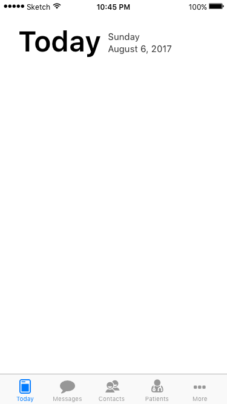
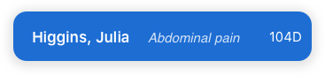
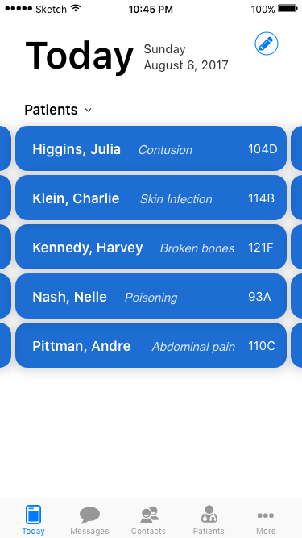
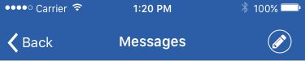
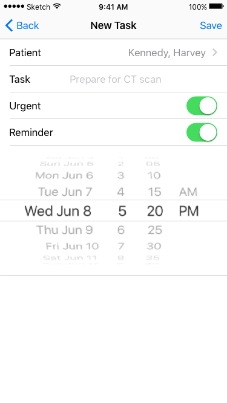
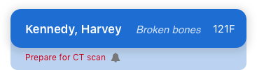
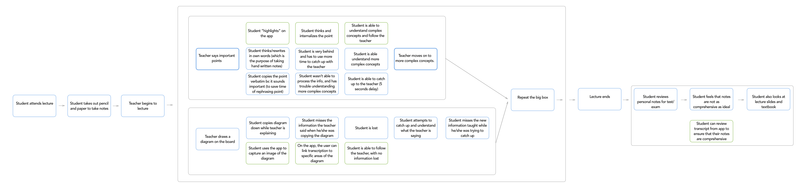

During my time interning at
Mobile Heartbeat, I was assigned the project of creating a Work Flow feature to facilitate the use of Mobile Heartbeat's mobile application. Mobile Heartbeat is a mobile and desktop which streamlines communication between the medical staff of a hospital. This project gave me an opportunity to design an feature of an existing application from scratch while considering the many business requirements that were specified.
Objective
Workflow is a place where users can access information that is important to them. All of the information can also be found throughout the application, however, the goal of workflow is to consolidate content that is constantly accessed to limit distraction and noise.
Features
Assigned Patient List
Personal To Do List/Collaborative To Do List
Pinned for later/Save For Later (Phone Call/ Pages/ Alerts/ Lab reports)
Alerts (Stroke Team)
Frequent Contacts
Basic layout
Based off of the “Today” tab of the App Store App → Compliant to apple guidelines
Location: “Today” tab. The first tab in the tab bar.
Users would automatically be on the “Today” tab whenever they enter the app.

Assigned Patient List
Goal: To display the relevant patient’s for the user in their first page to limit the click count it takes to view patient information.

A Patient Card
Clicking a patient card will bring the user the Patient Info screen.

To view more patient's, scroll horizontally
Personal To Do List
Goal: Give users the ability to create a to-do list for tasks that correspond to a patient.
Methods to add task:
[Today] tab. Top right corner.
[Patient Info] screen. Top right corner.
Clicking on a patient card will bring the user the Patient Info screen.
[Today] Tab

[Patient Info] Screen
When the button is clicked, a modal will appear allowing users to fill in details about the tasks.
The only required field is patient and task, the rest is defaulted to “off”.
The picker would appear if reminder field is set to “on”.

Picker pops up if "Reminder" is turned on
After the user saves the task, it will appear in red or black under the patient card to indicate its urgency.
There will also be a bell icon if the user chooses to be reminded of the task at a later period.

Patient with an urgent corresponding task that also has a reminder set to it.
The patient's list can be organized based on name, bed number, or the number of tasks and urgency.
UX Process
Idea Validation
The first step to the UX process is to validate my idea. I conducted a questionnaire to understand:
1. If people would even use the app.
2. If they would use the app, what would they want to app to do (needs, behaviors, goals, and frustrations).
Survey Summary
Attending lectures is very simple. The idea is that you are there to absorb information and ask questions. Note taking is technically not a fundamental part of attending lectures but people take notes because they want to retain their knowledge and have material to study from later. If an application exists to help students take notes, then they can concentrate all their attention on listening to the teacher and process the information.
During the survey, users expressed their desire to take as little notes as possible as long as they have an account of the important information mentioned in the class. Some of the survey participants reported that writing speed as something they want to improve on, as their current writing speed interferes with their ability to follow the teacher.
Interview Summary
Based on the results of the survey, I selected several participants to do in-depth interviews with. Interviewees supported the idea of transcribing lectures and allowing users to “highlight” the previously said sentences. A participant suggested allowing users to highlight several sentences at once. The app can provide users one button and based on the number of times pressed, the app will highlight the number of transcribed sentences accordingly.
Respondents were concerned about the accuracy of transcribing different accents as many of their teachers are international. To make the notes as accurate as possible, one respondent proposed to allow the transcriptions to be editable. Alternatively, there could be a “share and compare” function; the app can automatically collect the lecture transcriptions from students who used the app during the class and compare the transcriptions to create a version with the most accurate data. Then, each student will receive the final version.
For classes in which teachers don’t provide a pdf version of their PPT, participants have reported copying the entire PPT in their notes. In addition, respondents have said that professors often draw diagrams to supplement their lectures, however, when the student copies them down, the accuracy of the diagrams are often less than ideal. A possible feature to help this process is a camera tool that allows users to include the captured image in an appropriate place in the notes. The captured image can also be edited either by freehand drawing or by connecting dictated statements to specific locations on the image.
Respondents reported preferring the traditional paper and pencil method for the ability to sketch free-handedly. The app can implement a feature which allows users to draw on their phone while transcribing and each stroke can be linked to a transcription. This can allow users to trace back to the audio and listen to the audio that was recorded when they were drawing.
Many users were concerned about the format of the transcribed notes. Participants favored the organization of their notes when they type and write and wanted that feature to be included in the application. The application can include a feature to “indent”/ ”unindent”, therefore users can better structure their notes and mirror what they would have done otherwise when using paper/computer. All in all, users feel that this app should be very simple and require as little attention as possible.
Competitive Analysis
The competitive analysis looks at the three most popular note taking methods. Each method excelled in certain areas and but there were also areas in which the method lacks in. I analyzed each one to understand what is working and what is not working for each of them. For each detail collected, I thought of a feature to implement or a concept to watch out for. However, not every idea is included in the final product as it may get overwhelming for the user to implement it all. This process helped me develop the features of the application.
OneNote
- Each page is organized into notebooks and then into sections.
- Implement a method to organize transcriptions.
- The drawing feature allows users to interact with OneNote like they would interact with a notebook.
- Allow for free drawing mode.
- The recording feature allows users to record as they type. A play button appears next to lines user records while typing.
- Allow users to jump to specific time stamps by clicking on transcribed sentences.
- Limited formatting options. There are very few variations you can do for each typed line. Help make the document more consistent.
- Implement strict formatting options, there is limited space on the phone so having preset options can save space.
- “Tags”/icons are very good visual cues and can also act as reminders of specific actions to take.
- Allow the user of tags/icons to use as shorthand for reminders students want to set during lectures.
- Bad formatting when printing from OneNote. The printed document often contains many empty pages and the text for each page is really big even if the font is set to 11.
- Format the document in such that users can easily print and review.
Pen and Paper
- Using pen and pencil to take notes is beneficial as you can quickly change from writing words to drawing diagrams.
- The transition from “highlighting” to drawing should be smooth.
- Challenge to reformat the document. Can’t move sections of text unless user rewrites.
- Allow users to edit order of text.
- Easy to misplace and lose paper documents.
- Allow saving on the app and exporting. Connect to Google Drive/Dropbox and automatically save the notes to the cloud.
Microphone
- Transcribing audio frees up user’s attention to attend to more important things.
- Additional features of the app must not require too much attention from the user. The goal is to free up the user's attention and place it on processing lectured material.
- Users must go through the entire recording in order identify the useful information.
- The “highlight” feature should be accurate so users don’t have to look at the entire transcription.
- The recorded audio may not always be coherent, due to static or distance from the speaker.
- Implement a feature to compare with others to get a more accurate transcription of a lecture.
This process helped me understand the competition. And by taking the time to analyze each of them, I have a better understanding of the reasons why a user would prefer one over the other. Therefore, I can create a platform that integrates the best qualities of each method.
Empathy Map
Persona
Scenario/Storyboard
(Hover and scroll to zoom!)

MVP and User Stories
Information Architecture
If you boil it down, ēnk is essentially a transcription application that allows users to manipulate the incoming data. The application is very simple and all its additional features are built on top of the transcription function. As a result, the information architecture of ēnk draws a lot of inspiration from the IA of Snapchat.
User Flow
Wire Frame
(Hover and scroll to zoom!)
Medium Fideltiy Mockup
(Hover and scroll to zoom!)
When designing the low fidelity wireframes of ēnk, much of the design decisions I made were based on the user stories and MVP features list I created previously. I created the wireframe with pencil and paper, drawing very rough sketches of the screens to organize the layout of the individual elements of the screens. During the process, I had a lot of difficulties structuring the transcription screen. There were many functions I wanted to implement in an easily reachable area, however, I also had to keep in mind that ideally users would benefit from having to look at the screen as least as possible. Therefore, the screen has to be structured in a way that minimizes accidental clicking. I created multiple variations but was still not sure of which had the most optimal positioning for the buttons.
After presenting the prototype to potential users, I received several suggestions regarding the organization of the transcription screen. It was suggested that I consider displaying the secondary buttons (“enter”/”indent”) below the “Highlight” button. I believe this suggestion lays out the buttons in such way that is the most natural for the user. With the secondary buttons below the “Highlight” button, the chances of accidentally tapping them are lowered.
Style Guide
Mobile Application User Testing
The overall user testing went very smoothly and the assigned tasks were completed without much hesitation. Users seemed comfortable navigating through the application. However, there was some confusion caused by the limitations of the prototype. Some users were confused with the real-time transcription data. They were not sure how the transcriptions would be displayed in real time; and as a result, how to interact with the text. However, with a higher fidelity prototype (not just lo-fi prototype), I think the confusion will be dismissed.
The users that tested the application were all students. Males and females with ages ranging from 18-25. They were medium to heavy smartphone users. The testers all had different note-taking and studying strategies so observing that they are able to navigate the application smoothly was a good reassurance of the IA and UI of the application. However, in real lecture situations, users are expected to interact with the app without looking at the screen much. I.e. the user would focus all his/her attention on the teacher and position a finger over the “highlight” button. So when an important statement has been made, the user can click the button they are hovered over to “highlight”. All without looking at the smartphone. Therefore, users also were asked to interact with the application in a similar situation to real life lecture situations. Users found that the large “highlight” button and the positioning of the extra functions (enter/indent) made it easy to interact without looking. However, many suggested to only show the extra functions when looking at the highlighted text. The reason being that there is no visual feedback when these buttons are clicked if the user is looking at the entire transcription.
From observing the users, I will further iterate on the transcription screen. The amount of functions necessary on the screen requires more iterations in order to figure out the optimal positioning of the elements.